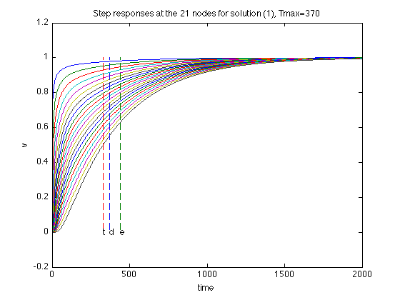
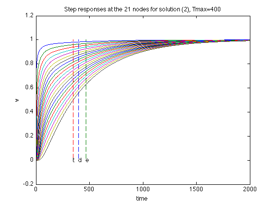
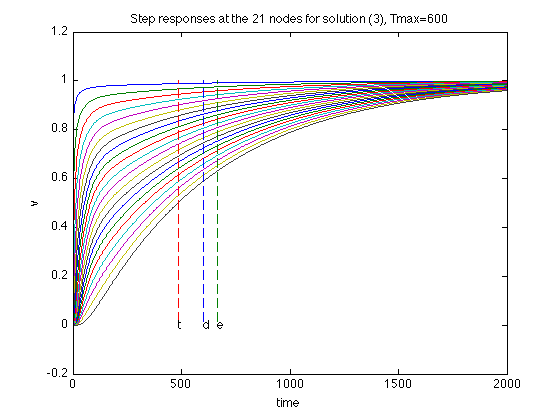
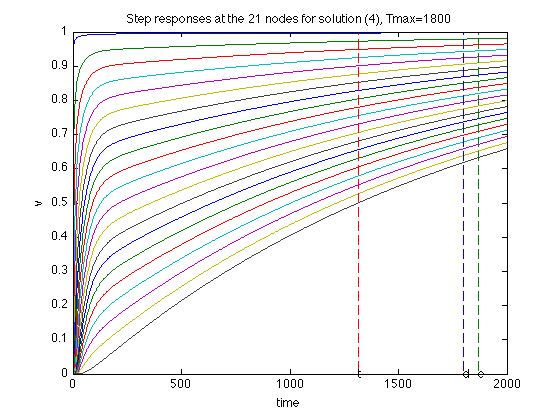
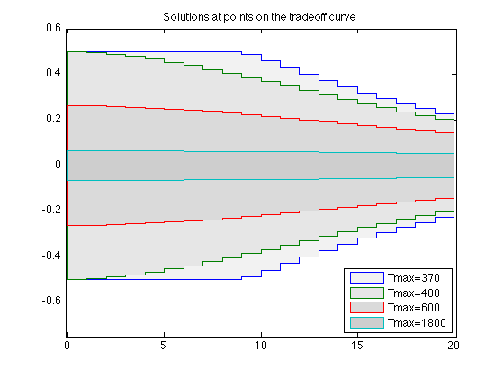

Optimal interconnect wire sizing
n=21;
m=n-1;
beta = 0.5;
alpha = 1;
Go = 1;
Co = 10;
wmax = 1.0;
CC = zeros(n,n,m+1);
GG = zeros(n,n,m+1);
CC(n,n,1) = Co;
GG(1,1,1) = Go;
for i = 1 : n - 1,
CC(i, i, i+1) = beta;
CC(i+1,i+1,i+1) = beta;
GG(i, i, i+1) = +alpha;
GG(i+1,i, i+1) = -alpha;
GG(i, i+1,i+1) = -alpha;
GG(i+1,i+1,i+1) = +alpha;
end
CC = reshape(CC,n*n,m+1);
GG = reshape(GG,n*n,m+1);
npts = 50;
delays = linspace(400,2000,npts);
xdelays = [ 370, 400, 600, 1800 ];
xnpts = length(xdelays);
areas = zeros(1,npts);
xareas = zeros(1,xnpts);
sizes = zeros(m,xnpts);
for i = 1 : npts + xnpts,
if i > npts,
xi = i - npts;
delay = xdelays(xi);
disp( sprintf( 'Particular solution %d of %d (Tmax = %g)', xi, xnpts, delay ) );
else,
delay = delays(i);
disp( sprintf( 'Point %d of %d on the tradeoff curve (Tmax = %g)', i, npts, delay ) );
end
cvx_begin sdp quiet
variable x(m)
variable G(n,n) symmetric
variable C(n,n) symmetric
minimize( sum(x) )
G == reshape( GG * [ 1 ; x ], n, n );
C == reshape( CC * [ 1 ; x ], n, n );
delay * G - C >= 0;
x >= 0;
x <= wmax;
cvx_end
if i <= npts,
areas(i) = cvx_optval;
else,
xareas(xi) = cvx_optval;
sizes(:,xi) = x;
figure(xi+2);
A = -inv(C)*G;
B = -A*ones(n,1);
T = linspace(0,2000,1000);
Y = simple_step(A,B,T(2),length(T));
hold off; plot(T,Y,'-'); hold on;
xlabel('time');
ylabel('v');
tthres=T(min(find(Y(n,:)>0.5)));
GinvC=full(G\C);
tdom=max(eig(GinvC));
telm=max(sum(GinvC'));
plot(tdom*[1;1], [0;1], '--', telm*[1;1], [0;1],'--', ...
tthres*[1;1], [0;1], '--');
text(tdom,0,'d');
text(telm,0,'e');
text(tthres,0,'t');
title(sprintf('Step responses at the 21 nodes for solution (%d), Tmax=%g', xi, delay ));
end
end
figure(1)
ind = isfinite(areas);
plot(areas(ind), delays(ind));
xlabel('Area');
ylabel('Tdom');
title('Area-delay tradeoff curve');
hold on
for k = 1 : xnpts,
text( xareas(k), xdelays(k), sprintf( '(%d)', k ) );
end
figure(2)
m2 = 2 * m;
x1 = reshape( [ 1 : m ; 1 : m ], 1, m2 );
x2 = x1( 1, end : -1 : 1 );
y = [ - 0.5 * sizes(x1,:) ; + 0.5 * sizes(x2,:) ; - 0.5 * sizes(1,:) ];
x1 = reshape( [ 0 : m - 1 ; 1 : m ], m2, 1 );
x2 = x1( end : -1 : 1, 1 );
x = [ x1 ; x2 ; 0 ];
h = fill( x, y, ones(4*m+1,1)*[0.9,0.8,0.7,0.6] );
hold on
h2 = plot( x, y, '-' );
axis([ -0.1, m + 0.1, min(y(:))-0.25, max(y(:))+0.1 ]);
colormap(gray);
caxis([-1,1]);
title('Solutions at points on the tradeoff curve');
legends = {};
for k = 1 : xnpts,
set( h(k), 'EdgeColor', get( h2(k), 'Color' ) );
legends{k} = sprintf( 'Tmax=%g', xdelays(k) );
end
legend(legends{:},4);
Point 1 of 50 on the tradeoff curve (Tmax = 400)
Point 2 of 50 on the tradeoff curve (Tmax = 432.653)
Point 3 of 50 on the tradeoff curve (Tmax = 465.306)
Point 4 of 50 on the tradeoff curve (Tmax = 497.959)
Point 5 of 50 on the tradeoff curve (Tmax = 530.612)
Point 6 of 50 on the tradeoff curve (Tmax = 563.265)
Point 7 of 50 on the tradeoff curve (Tmax = 595.918)
Point 8 of 50 on the tradeoff curve (Tmax = 628.571)
Point 9 of 50 on the tradeoff curve (Tmax = 661.224)
Point 10 of 50 on the tradeoff curve (Tmax = 693.878)
Point 11 of 50 on the tradeoff curve (Tmax = 726.531)
Point 12 of 50 on the tradeoff curve (Tmax = 759.184)
Point 13 of 50 on the tradeoff curve (Tmax = 791.837)
Point 14 of 50 on the tradeoff curve (Tmax = 824.49)
Point 15 of 50 on the tradeoff curve (Tmax = 857.143)
Point 16 of 50 on the tradeoff curve (Tmax = 889.796)
Point 17 of 50 on the tradeoff curve (Tmax = 922.449)
Point 18 of 50 on the tradeoff curve (Tmax = 955.102)
Point 19 of 50 on the tradeoff curve (Tmax = 987.755)
Point 20 of 50 on the tradeoff curve (Tmax = 1020.41)
Point 21 of 50 on the tradeoff curve (Tmax = 1053.06)
Point 22 of 50 on the tradeoff curve (Tmax = 1085.71)
Point 23 of 50 on the tradeoff curve (Tmax = 1118.37)
Point 24 of 50 on the tradeoff curve (Tmax = 1151.02)
Point 25 of 50 on the tradeoff curve (Tmax = 1183.67)
Point 26 of 50 on the tradeoff curve (Tmax = 1216.33)
Point 27 of 50 on the tradeoff curve (Tmax = 1248.98)
Point 28 of 50 on the tradeoff curve (Tmax = 1281.63)
Point 29 of 50 on the tradeoff curve (Tmax = 1314.29)
Point 30 of 50 on the tradeoff curve (Tmax = 1346.94)
Point 31 of 50 on the tradeoff curve (Tmax = 1379.59)
Point 32 of 50 on the tradeoff curve (Tmax = 1412.24)
Point 33 of 50 on the tradeoff curve (Tmax = 1444.9)
Point 34 of 50 on the tradeoff curve (Tmax = 1477.55)
Point 35 of 50 on the tradeoff curve (Tmax = 1510.2)
Point 36 of 50 on the tradeoff curve (Tmax = 1542.86)
Point 37 of 50 on the tradeoff curve (Tmax = 1575.51)
Point 38 of 50 on the tradeoff curve (Tmax = 1608.16)
Point 39 of 50 on the tradeoff curve (Tmax = 1640.82)
Point 40 of 50 on the tradeoff curve (Tmax = 1673.47)
Point 41 of 50 on the tradeoff curve (Tmax = 1706.12)
Point 42 of 50 on the tradeoff curve (Tmax = 1738.78)
Point 43 of 50 on the tradeoff curve (Tmax = 1771.43)
Point 44 of 50 on the tradeoff curve (Tmax = 1804.08)
Point 45 of 50 on the tradeoff curve (Tmax = 1836.73)
Point 46 of 50 on the tradeoff curve (Tmax = 1869.39)
Point 47 of 50 on the tradeoff curve (Tmax = 1902.04)
Point 48 of 50 on the tradeoff curve (Tmax = 1934.69)
Point 49 of 50 on the tradeoff curve (Tmax = 1967.35)
Point 50 of 50 on the tradeoff curve (Tmax = 2000)
Particular solution 1 of 4 (Tmax = 370)
Particular solution 2 of 4 (Tmax = 400)
Particular solution 3 of 4 (Tmax = 600)
Particular solution 4 of 4 (Tmax = 1800)
   

